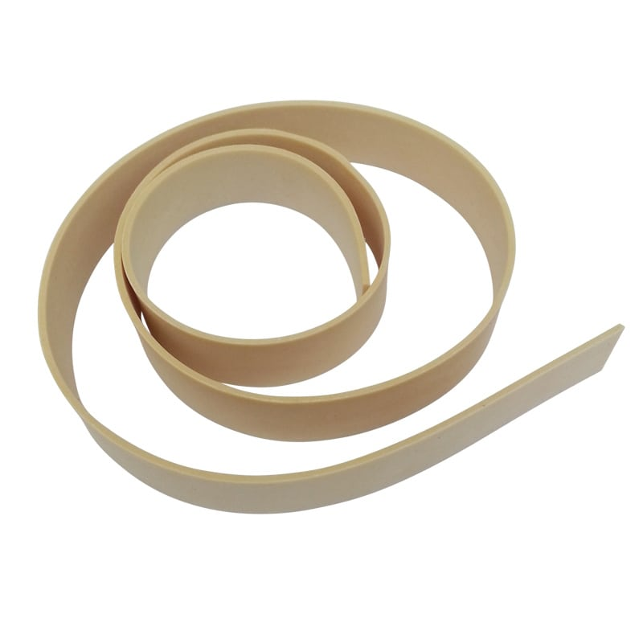
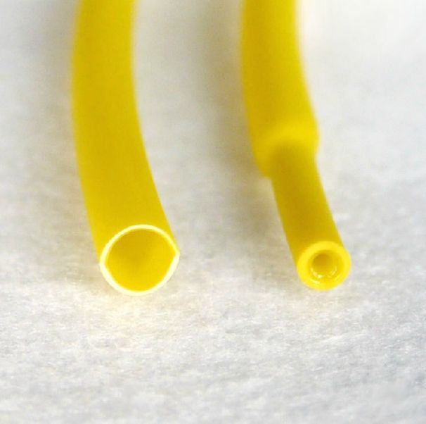

Le masque à oxygène est conçu pour une oxygénothérapie pratique. Il est fabriqué en latex de qualité médicale, conçu pour transférer l'oxygène gazeux d'un réservoir de stockage vers les poumons du patient pendant les chirurgies ou les soins intensifs
Garrot en latex

Le garrot en latex plein est un dispositif médical qui permet de compresser les veines et les artères pour la réalisation d’une prise de sang ou de tout autre acte médical.
C'est une bande de caoutchouc naturel, lisse et homogène qui peut être stérilisée à l'oxyde d'éthylène et de façon chimique. En revanche, la stérilisation par air chaud ou gamma n'est pas adaptée.
.
Tuyau en caoutchouc de latex Tube

Tuyau en caoutchouc de latex Tube haute élastique pour tube médical chirurgical durable.C'est une bande de caoutchouc naturel, lisse et homogène qui peut être stérilisée à l'oxyde d'éthylène et de façon chimique.Existe en plusieurs diametre et en deux couleurs. Tres Resistant et concu avec multi couches.